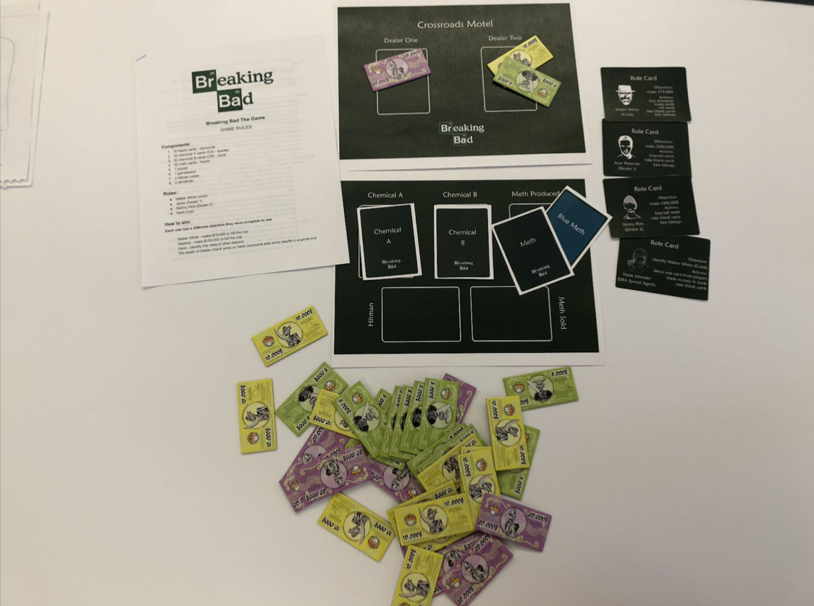

The IP we picked for this project is Breaking Bad. Considering the diverse roles involved in the show: Walter White (the cook), Jesse Pinkman (the dealer), and Hank (the cop), we decided to develop a social game based on the drug-dealing and cops-criminal interactions.
We started our design inspired by Werewolf which assigns different roles to each player and each role is kept secret from others. We applied this mechanic to our game because we decided that it fit the story of Breaking Bad where in most cases the cook, the dealer, and the cop don’t know the identities of each other(Walter and Jesse is an exception). To adapt this into a four-player game, we considered the possibility of adding a dealer or adding a cop, but we went with the two-dealers solution which implements a dealer’s bidding war in our game.
The first prototype included two chemicals that are essential for Walter to cook meth, one type of meth that is produced by the cook and a feature that allows Hank to secretly examine one and only one card on the table. After the first play-test within our group, we discovered that there is little threat to Hank since he could win by pointing out the cook whereas everyone else needed to meet a financial goal, so we added the hitman feature that allows every player except for Hank to hire a hitman (one of the two) and place it in front of the player they decide to kill.
In the early play-tests, we found that our system of one cook, two dealers, and one cop worked surprisingly well. We also liked the system of using the two chemicals to cook meth and the cop checking cards.
We then experimented with cook and dealers leaving money or meth out to be sold on their turns. After experimentation, we felt it was best if dealers needed to leave money out prior to a cook putting out the meth. We also thought this would be more thematically accurate as in a real cook dealer interaction we assumed that the cook would have a similar advantage to this.
One issue we struggled with finding a good solution was how to coordinate the sale of meth from cooks to dealers. We originally considered having a phase where cooks and dealers could all open their eyes together and interact, however, we avoided this in order to maintain the odd dynamic created by keeping your eyes closed for ¾ of the game.
We also decided to mix in blue meth (which is the unique meth Walter makes in Breaking Bad) into the meth pile Walter produces that allows the dealer to sell them for a higher price once they acquire them. This introduced a small element of randomness and luck to the game without creating a drastic rubber band effect for dealers and the cook.
In the early play-tests, we found that our system of one cook, two dealers, and one cop worked surprisingly well. We also liked the system of using the two chemicals to cook meth and the cop checking cards.
In further developments, the introduction of an app that would narrate/play music during turns would combat players being able to hear movement during other player’s turns. Another alteration would be including smaller amounts of money such as$1,000 bills in addition to the $5,000, $10,000, $20,000 bills already included.